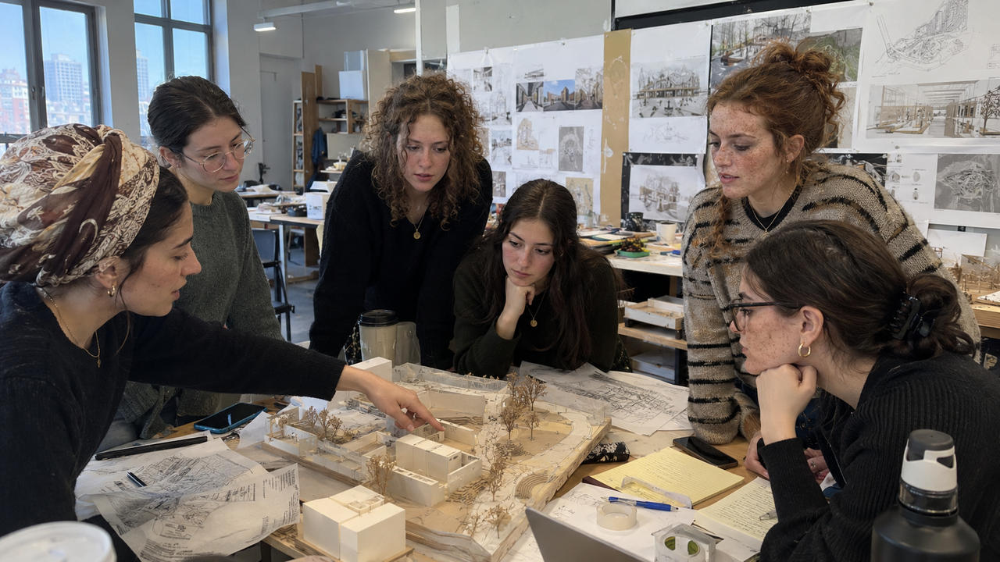
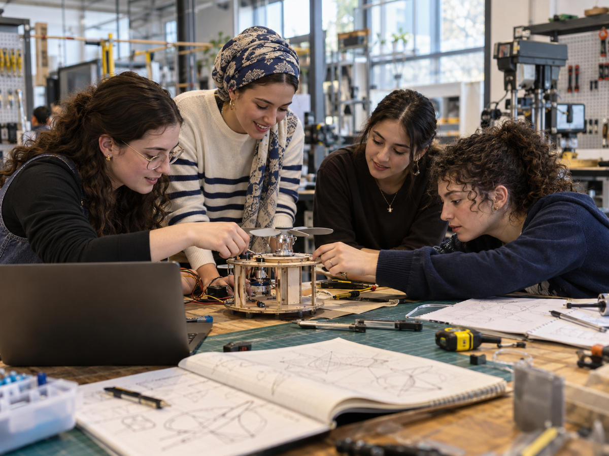
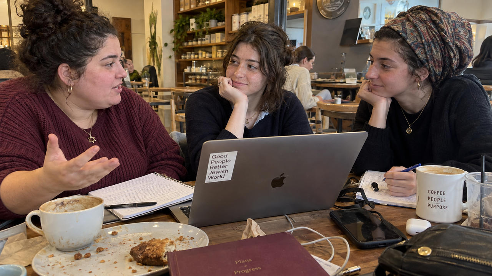

Career discovery
See a profession up close.
Visits and demonstrations that go beyond the job description.
Explore an exampleWe’re building ways to explore careers, try practical work, and learn directly from professionals.

Visits and demonstrations that go beyond the job description.
Explore an example
Short challenges with practical results and feedback.
Explore an example
Learn about the decisions and daily work behind a career.
Request an introductionHave another field in mind? Tell us what interests you, and help shape the opportunities we develop.
Share your interests These are proposed formats, not scheduled programs or guaranteed placements.